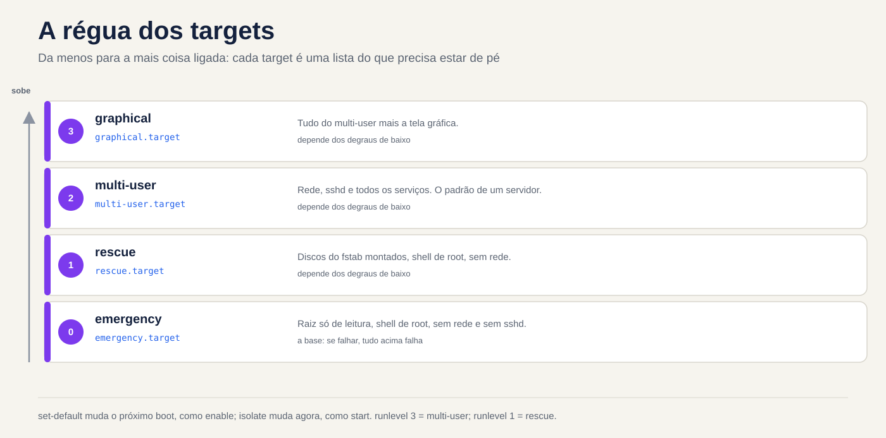
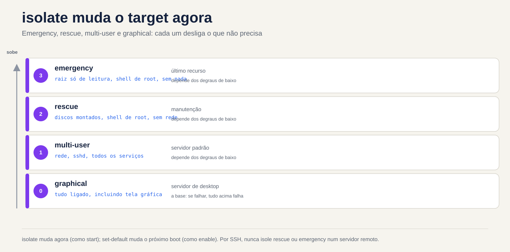

Lezione 4.3 · Obiettivi, arresto e riavvio
Nella 4.2 hai attivato e disattivato i servizi uno per uno. Oggi si cambia la modalità dell'intera macchina: dalla modalità normale alla modalità di manutenzione e viceversa. Imparerai anche come spegnere e riavviare un server senza cogliere nessuno di sorpresa.
Chiave di questo corso: un target è la modalità operativa di una macchina, un pacchetto di unità.
get-defaulteset-defaultcambiano la modalità di avvio successiva;isolatecambia ora modalità.rescueeemergencysono modalità di manutenzione ed entrambe richiedono la password di root. Per spegnere o riavviare:systemctl poweroffesystemctl reboot, oppureshutdownquando si desidera l'ora e l'avviso.
| File | |
|---|---|
| Modulo | M4 · Boot e systemd, lezione 3 di 4 |
| Quando | Settimana 9 |
| Tempo | intorno all'1:30 |
| Prerequisito | lezioni 4.1 e 4.2 |
| Prova | LPIC-1 101.3 · RHCSA (avvio su target, target predefinito) |
| Laboratorio | rock-lab (201) e debian-lab (202), con la console Proxmox aperta |
| Istantanee | m4a3-inicio e m4a3-fim |
1 Riscaldamento
Rispondi dalla tua testa, senza consultare. Le risposte si trovano nella chiave di risposta, alla fine della lezione.
- Esegui
sudo systemctl isolate rescue.targetin una sessione SSH. Cosa succede alla tua sessione? - Qual è la differenza tra
systemctl set-defaultesystemctl isolate? - Cosa fa
shutdown -r +10e come si annulla?
2 Perché è importante
| Situazione attuale | Cosa risolve |
|---|---|
Hai cambiato /etc/fstab, riavviato e il server non si avvia | Immettere emergency.target tramite la console |
| Manutenzione che richiede la macchina senza servizi in esecuzione e senza utenti | rescue.target |
| Riavvia il server di un cliente alle 23:00, avvisando chiunque abbia effettuato l'accesso | shutdown -r 23:00 "mensagem" |
| Qualcuno ha installato un'interfaccia grafica su un server e questa ha iniziato a funzionare in modalità grafica | systemctl set-default multi-user.target |
3 Modello mentale
Un obiettivo è un elenco di ciò che deve essere acceso affinché la macchina si trovi in una determinata modalità. Pensa a un sovrano, dalla cosa più piccola a quella più connessa:
emergency → rescue → multi-user → graphical
raiz só discos do rede, sshd, multi-user
leitura, fstab, todos os + tela
shell root shell root serviços gráficamulti-user.target è il normale server: rete, sshd e suoi servizi, senza schermata grafica. È lo standard per qualsiasi server. graphical.target è tutto questo più lo schermo grafico. Le due a sinistra sono modalità di manutenzione: non hanno networking o sshd, solo una shell di root sulla console.
Hai due leve, le stesse di 4.2:
| Leva | Cambia quando | Comando | Relativo in 4.2 |
|---|---|---|---|
| Modalità di avvio successivo | Al prossimo avvio | systemctl set-default | enable |
| Modalità Ora | Ora senza riavviare | systemctl isolate | start |
I vecchi runlevel (da 0 a 6) che hai visto nella tabella 4.1 sono solo vecchi nomi per questi target. runlevel 3 è multi-user.target e runlevel 1 è rescue.target.


4 Elementi essenziali
Visualizza e modifica lo standard target
systemctl get-default
sudo systemctl set-default multi-user.target
ls -l /etc/systemd/system/default.targetset-default non fa magie: scambia semplicemente un collegamento simbolico, default.target, per puntare al bersaglio scelto. All'avvio, systemd cerca default.target e segue il collegamento.
Scopri cosa tira un target
systemctl list-units --type=target
systemctl list-dependencies multi-user.target | head -20Cambia ora: isola
sudo systemctl isolate multi-user.targetisolate lega ciò che richiede il nuovo target e tutto ciò che non ne fa parte. Pertanto accetta solo target contrassegnati con AllowIsolate=yes, come multiutente, grafico, salvataggio, emergenza, riavvio e spegnimento. Su altri target rifiuta con Operazione rifiutata, l'unità potrebbe non essere isolata.
Scorciatoie che utilizzerai più di isolate:
| Scorciatoia | Equivalente a |
|---|---|
systemctl rescue | isolate rescue.target |
systemctl emergency | isolate emergency.target |
systemctl default | isolate default.target (ritorna alla modalità standard) |
soccorso × emergenza
| salvataggio.obiettivo | emergenza.target | |
|---|---|---|
Root (/), in avvio diretto | montato per leggere e scrivere | montato sola lettura |
| Altri dischi fstab | assemblato | non assemblato |
Rete e sshd | no | no |
| Richiede la password di root | sì | sì |
| Quando utilizzare | manutenzione con impianto quasi fermo | fstab rotto o quando il salvataggio non viene eseguito |
| Vecchio nome | livello di esecuzione 1, single | nessun equivalente |
La riga della password è quella che viene utilizzata dalle persone esperte. Entrambi i modi chiamano sulogin, che richiede la password root: la tua password sudo non funzionerà. Se l'account root è bloccato, la modalità di manutenzione non si apre e viene visualizzato Impossibile aprire l'accesso alla console, l'account root è bloccato. Controlla prima di averne bisogno:
sudo passwd -S rootSe la seconda colonna è L o LK, il conto è bloccato (bloccato). P o PS significa che ha una password. Hai dimenticato la password di root? Questo è 4.4.
Immettere una destinazione solo in questo avvio
In GRUB, aggiungere systemd.unit=rescue.target o systemd.unit=emergency.target alla riga del kernel. È solo per quello stivale. Anche i vecchi nomi 1, s e single portano al salvataggio. Lo fate in pratica nella 4.4; per ora sappi che esiste.
Spegni e riavvia
sudo systemctl poweroff # appendere
sudo systemctl reboot # ricomincia
sudo systemctl halt # alla CPU, ma potrebbe non interrompere l'alimentazione
sudo shutdown -h now # riattacca adesso
sudo shutdown -r +10 "Reinício para atualização" # tra 10 minuti, con preavviso
sudo shutdown -r 23:00 # secondo un programma
sudo shutdown -c # annullare il programmato
wall "Servidor reinicia às 23h" # messaggio a tutti i terminaliTre dettagli di shutdown:
- Senza tempo, attende 1 minuto, cioè non è immediato. Per essere immediato, usa
now. - Quando mancano 5 minuti, crea il file
/run/nologine da quel momento in poi gli utenti normali non potranno più entrare. - Per vedere cosa è in programma, usa
shutdown --show. Se la tua versione di systemd non dispone di questa opzione, leggi/run/systemd/shutdown/scheduled.
I vecchi comandi funzionano ancora e rientrano nell'LPIC: init 0 si spegne, init 6 si riavvia, telinit 1 va in soccorso e runlevel mostra il precedente e l'attuale (ad esempio N 3).
Per sapere quando la macchina si è riavviata: who -b, last -x reboot shutdown | head e journalctl --list-boots.
Rocky × Debian
| Roccioso 9 | Debian 12 | |
|---|---|---|
| Impostazione predefinita del server senza GUI di destinazione | multi-user.target | multi-user.target |
| Account root dopo l'installazione | bloccato, se non hai fornito la password di root nel programma di installazione | bloccato, se hai lasciato vuota la password di root |
| Comandi di destinazione e di arresto | è uguale a (systemd 252) | equal (systemd 252) |
Entrambi utilizzano la stessa versione di systemd, quindi i comandi sono gli stessi. In pratica, la differenza sta nell'account root, e questo decide se è possibile entrare in modalità manutenzione.
Cosa viene testato
In RHCSA: avviare il sistema su una destinazione diversa e definire la destinazione predefinita. L'attività sorella, che interrompe l'avvio per riottenere l'accesso, è 4.4. In LPIC-1 101.3: target e runlevel, shutdown e reboot tramite riga di comando, avvisano in anticipo gli utenti (wall e il messaggio da shutdown), e init/telinit. Tieni inoltre presente che acpid e systemd-logind gestiscono il pulsante di accensione.
5 Laboratorio guidato
Passo 0 · Istantanea e console
Nella shell del nodo Proxmox:
qm snapshot 201 m4a3-inicio
qm snapshot 202 m4a3-inicioApri la console (noVNC) delle due VM nell'interfaccia Proxmox e lasciala aperta. In questa lezione la rete cadrà di proposito e la console sarà la tua unica via di ritorno. Su ciascuna VM:
mkdir -p ~/lab43 && cd ~/lab43Passo 1 · Dove si trova adesso la macchina
Su entrambe le VM:
systemctl get-default
ls -l /etc/systemd/system/default.target
systemctl list-units --type=target --state=active
runlevelScrivi le risposte in ~/lab43/notas.txt. Previsto: multi-user.target, un link che punta a /usr/lib/systemd/system/multi-user.target e N 3 in runlevel.
Passo 2 · Controllare l'account root
sudo passwd -S rootSe appare L o LK, impostare una password root solo in laboratorio, digitandola personalmente, e salvarla nelle password del gestore:
sudo passwd rootSenza questo, i passaggi 3 e 6 si bloccano sul messaggio l'account root è bloccato.
Decidi 1
Sei in Rocky-Lab tramite SSH, non tramite la console, e verrà eseguito sudo systemctl isolate rescue.target. Cosa succede?
- A) Non cambia nulla e la sessione SSH continua normalmente.
- B) La sessione SSH si interrompe o si blocca e la console continua a richiedere la password root.
- C) La macchina si riavvia e torna in modalità ripristino.
Controllare un'opzione prima dell'esecuzione. Quindi eseguilo e guarda cosa succede.
| Se hai selezionato | Risultato | Perché |
|---|---|---|
| A | Sbagliato | isolate per tutto ciò che non rientra nel salvataggio, e questo include sshd e la rete |
| B | Capito bene | Senza sshd e senza collegamento in rete la vostra sessione perde la strada. Rescue apre una shell root solo nella console |
| C | Sbagliato | isolate non si riavvia: cambia modalità con la macchina accesa |
Per risolvere: non isolare mai il salvataggio o l'emergenza tramite SSH su un server remoto, a meno che non si disponga di una console fuori banda (iLO, IPMI o console Proxmox). Ce l'hai in laboratorio, quindi puoi testarlo.
Passo 3 · Inside Rescue and Emergency
Nella console di Rocky-Lab, inserisci la password di root e controlla:
systemctl is-system-running # previsto: manutenzione
systemctl list-units --type=service --state=running
ip -br addr
findmnt /Nota quanto poco resta in esecuzione. Per uscire, tornare alla modalità standard e accedere nuovamente tramite SSH:
systemctl defaultOra a debian-lab. Direttamente nella console, inserisci il tuo nome utente ed esegui:
sudo systemctl emergencyInserisci la password di root e confronta con il salvataggio:
systemctl list-units --state=active | wc -l
findmnt /Nota una cosa: poiché sei entrato con la macchina già accesa, il root rimane com'era, montato in lettura e scrittura. Il root di sola lettura appare quando si avvia la macchina direttamente in emergenza, tramite GRUB, e questo è per la 4.4. Esci con systemctl default.
Decidi 2
In debian-lab, tramite SSH, pianifica un riavvio e visualizza la pianificazione:
sudo shutdown -r +6 "Teste da aula 4.3"
shutdown --show || cat /run/systemd/shutdown/scheduledNon chiudere questa sessione. Attendi circa 2 minuti, finché non ne rimangono meno di 5, e apri una seconda sessione SSH con il tuo utente. Entra?
- A) Entra normalmente.
- B) Viene rifiutato, con il messaggio che il sistema è in spegnimento.
- C) Entra, ma esce contemporaneamente.
| Se hai selezionato | Risultato | Perché |
|---|---|---|
| A | Sbagliato | Con 5 minuti rimanenti, shutdown crea /run/nologin |
| B | Capito bene | Con questo file presente, pam_nologin rifiuta il login da qualsiasi utente diverso da root |
| C | Sbagliato | Il rifiuto avviene prima dell'apertura della sessione |
Nella prima sessione che rimane aperta, annullare e controllare:
sudo shutdown -c
ls -l /run/nologinSe il file non è scomparso, eliminarlo con sudo rm /run/nologin.
Per risolvere: ecco perché si mantiene aperta una sessione dopo la pianificazione. Se devi annullare con meno di 5 minuti rimanenti, non potrai più accedere con il tuo nome utente. La programmazione con preavviso è shutdown; il riavvio è ora systemctl reboot.
Passaggio 4 · Modificare la destinazione predefinita
In rocky-lab, che non ha un'interfaccia grafica installata:
sudo systemctl set-default graphical.target
ls -l /etc/systemd/system/default.target
sudo systemctl rebootAccedi nuovamente tramite SSH e controlla:
systemctl get-default
systemctl is-system-runningLa macchina si alza normalmente. graphical.target richiede il multiutente e vuole solo lo screen manager, e un Wants= che non esiste viene ignorato (questo è dalla 4.2). Funziona, ma confonde chi viene dopo. Ritorna alle impostazioni predefinite del server:
sudo systemctl set-default multi-user.targetPassaggio 5 · Chi ha riavviato e quando
Su entrambe le VM:
who -b
last -x reboot shutdown | head -6
journalctl --list-boots | tail -5Dovresti vedere i riavvii per questa lezione. Un reboot senza shutdown immediatamente prima indica che la macchina è stata lasciata cadere, anziché essere spenta correttamente.
6 Interrompi e ripara
In rock-lab, tramite SSH:


sudo systemctl set-default rescue.target
sudo systemctl rebootSSH non restituisce. Investiga semplicemente attraverso la console: cosa appare sullo schermo? Quale modalità è attiva? Perché la rete non si è riattivata?
Dopo aver indagato, correggere e verificare con un altro riavvio:
systemctl get-default
systemctl set-default multi-user.target
systemctl defaultLa lezione: quando un server "non torna in rete" dopo una modifica, la prima domanda è in che modalità si è riattivato?. La console risponde in pochi secondi.
7 trappole
isolate rescuetramite SSH su un server remoto. Rimani escluso e accedi di nuovo solo con una console fuori banda o con qualcuno davanti alla macchina.- Root bloccato. Soccorso ed emergenza non si aprono. Verificare con
passwd -S rootprima del giorno in cui ne hai bisogno. haltinvece dipoweroff. A seconda dell'hardware, la macchina si arresta ma rimane collegata all'alimentazione.shutdownsenza orario. Attende 1 minuto: non è immediato.- Programmato e dimenticato. Il server si riavvia all'orario previsto, in tutta la giornata lavorativa. Controlla con
shutdown --showe annulla conshutdown -c. isolatesu qualsiasi destinazione. SenzaAllowIsolate=yes, rifiuta.graphical.targetsul server. Non si rompe nulla, ma l'impostazione predefinita del server èmulti-user.target.
8 Quiz
- Quale comando mostra la destinazione predefinita?
- Si desidera che al prossimo avvio la macchina salga a
multi-user.target. Qual è il comando? - In un avvio diretto, qual è la differenza tra salvataggio ed emergenza per quanto riguarda i dischi root e fstab?
- Hai eseguito
shutdown -r 22:30 "Atualização". Cosa cambia per gli utenti alle 22:25? - Quali sono gli equivalenti sistematici di
init 6etelinit 1? - Hai effettuato l'accesso tramite SSH a un server remoto senza console fuori banda. Perché
systemctl isolate emergency.targetè una cattiva idea?
9 Cola
Conoscerlo a memoria
| Comando | Fare |
|---|---|
systemctl get-default | Mostra la modalità di avvio successiva |
systemctl set-default multi-user.target | Modifica la modalità del successivo avvio |
systemctl isolate X.target | Cambia modalità adesso |
systemctl rescue / emergency / default | Scorciatoie modalità |
systemctl poweroff / reboot | Spegni o riavvia adesso |
shutdown -r +10 "msg" / shutdown -c | Programma con preavviso/annullamento |
passwd -S root | Mostra se l'account root è bloccato |
Consultare
systemctl list-dependencies X.target, AllowIsolate=, /run/nologin, shutdown --show o /run/systemd/shutdown/scheduled, wall, runlevel, init, telinit, who -b, last -x.
Flashcards
| Domanda | Rispondi |
|---|---|
| Qual è la modalità server normale? | multi-user.target |
set-default sta a isolate come enable sta a...? | start |
Cosa c'è default.target dentro? | Un collegamento simbolico |
| Quale password richiede il salvataggio? | Quello radice |
Cosa succede quando mancano 5 minuti al shutdown? | /run/nologin viene creato e gli utenti comuni non inseriscono più |
10 Checklist e chiusura
- [ ] So come visualizzare e modificare il target predefinito
- [ ] Sono entrato in Rescue and Emergency tramite la console e sono tornato con
systemctl default - [ ] So perché il salvataggio non può essere isolato tramite SSH
- [ ] Ne ho pianificato, controllato e annullato uno
shutdown - [ ] Ho riparato una macchina che è andata in salvataggio
- [ ] Entrambe le VM hanno una password di root conosciuta
Ultimo esercizio, senza guardare la lezione: in debian-lab, programma un riavvio tra 15 minuti con un messaggio, mostra il programma, annulla e conferma che non c'è /run/nologin. In Rocky-Lab, conferma che il valore predefinito è multi-user.target.
Riavvia e conferenza: riavvia entrambe le VM e controlla:
systemctl get-default # target.multiutente
systemctl is-system-running # corsa
ls ~/lab43Termina snapshot, sul nodo Proxmox:
qm snapshot 201 m4a3-fim
qm snapshot 202 m4a3-fim11 Nella vita reale
Missione, sola lettura. Su un server reale che amministri, esegui semplicemente questi comandi, che non cambiano nulla:
systemctl get-default
who -b
last -x reboot shutdown | head -6
journalctl --list-boots | tail -5
sudo passwd -S rootRisposta: quando è stato eseguito l'ultimo ripristino? È stato un arresto pulito o un incidente? Se questo server non funzionasse domani, saresti in grado di salvarlo? Hai una password di root? Hai una console fuori banda?
Diario: scrivi tre righe su ciò che hai imparato oggi e una domanda che hai avuto.
Domani, senza guardare:
- Pronuncia a memoria i quattro bersagli sul righello, in ordine.
- Scrivere il comando che pianifica un riavvio per le 23:00 con avviso.
- Spiega in una frase perché il soccorso potrebbe non aprirsi.
12 Vai più in profondità quando vuoi
systemctl list-dependencies --reverse: chi tira un bersaglio.- Crea il tuo bersaglio, ad esempio un
manutencao.targetconAllowIsolate=yes. systemd-inhibit: programmi che mantengono lo spegnimento.- L'energia del pulsante di spegnimento:
HandlePowerKey=in/etc/systemd/logind.conf. systemctl soft-reboot, che riavvia solo lo spazio utente. È da systemd 254 in poi, quindi non esiste in Rocky 9 o Debian 12.
In DeepTutor: !explica isolate e set-default, !feynman rescue e emergency, !quiz targets e shutdown.
Risposta commentata
Heating
- La sessione si arresta in modo anomalo o si blocca. Il salvataggio arresta
sshde la rete e lascia solo una shell di root sulla console. set-defaultcambia la modalità del prossimo avvio, cambiando il collegamentodefault.target.isolatecambia modalità adesso, senza riavviare.- Pianifica un riavvio tra 10 minuti e avvisa gli utenti che hanno effettuato l'accesso. Annullare con
shutdown -c.
Quiz
systemctl get-default.sudo systemctl set-default multi-user.target. Ricorda che questo non cambia nulla adesso: per cambiarlo adesso, usaisolate.- Durante il salvataggio, il root è montato per la lettura e la scrittura e i dischi fstab sono montati. In caso di emergenza, il root è di sola lettura e non viene montato nulla da fstab. Ecco perché l'emergenza è la via d'uscita quando fstab non funziona.
- Mancano 5 minuti, poi viene creato
/run/nologin: gli utenti abituali non possono più entrare. Chiunque abbia già effettuato l'accesso continua e riceve notifiche. init 6èsystemctl reboot.telinit 1èsystemctl isolate rescue.targetosystemctl rescue.- La modalità di emergenza interrompe il networking e sshd, quindi la sessione SSH termina e non rimane più nulla per accedere nuovamente. Senza una console, qualcuno deve recarsi fisicamente alla macchina.